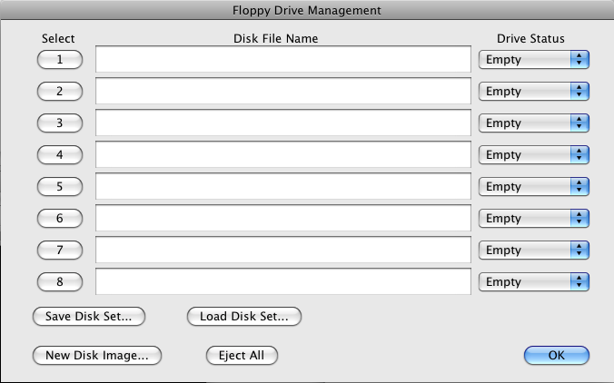
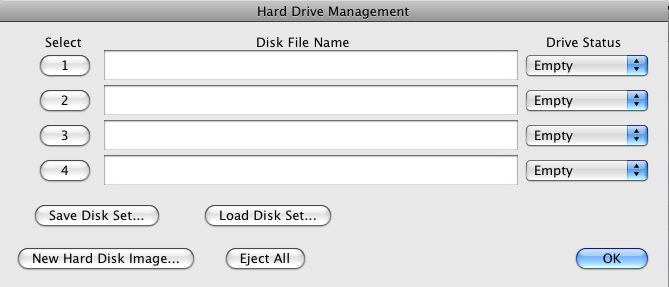
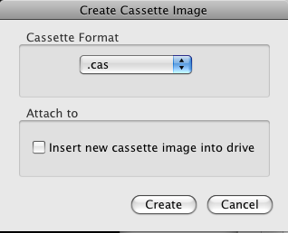
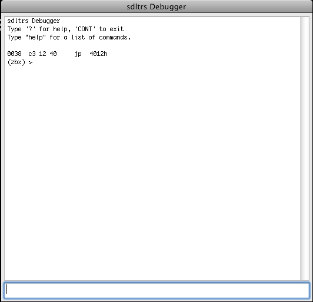

OS X Features
Introduction Features Options Text GUI OS X Features Known Bugs Release History Credits
| |
SDLTRS Help OS X Features Introduction Features Options Text GUI OS X Features Known Bugs Release History Credits |

This section of the window provides pushbuttons allowing you to access some of the common disk functions that are normally available in the Media menu or the Disk Drive Management window, related to disk sets and creating disk images. See the Media Menu help page for full explanations of the commands.Displayed Drives selector:
This section of the window controls which disk drives are shown in the Disk Drive Status display to the right of it. You may choose to display either the first four floppies, the second four floppies, or the hard drives.Disk Drive Status Display/Buttons:
This section of the window allows you to control one of the emulated disk drives on the TRS-80. You may insert a disk image by pressing the Insert button. You also can drag and drop a disk image file from the finder to the drive picture to insert the disk. When an image is inserted, you can write protect/unprotected with the Lock/Unlock button. When the drive is write protected, a small lock icon will appear above the lock button. Finally, you can drag disks from one drive to another as well. If you hold the option key while dragging a disk, the disks between the two drives will be swapped, as opposed to just moving the disk from one drive to another.Cassette Drive Display/Buttons:
Status may also be displayed by the drives. Insert/eject, and lock/unlock buttons will light up/darken when disks are inserted/removed, etc. Also, there is a LED on the drive. It indicates read/write activity.
This section of the window allows you to control the emulated cassette drive on the TRS-80. You may insert or remove a cassette image with the Insert/Eject button. The Manage button will take you to the cassette management window, see the Control Menu help section for details.Printer Control Menu/Button:
This section of the window allows you to chose which printer emulation you are using from the "Select" pulldown. You may choose the None, Text Printer, or Epson FX-80. The picture of the selected printer will be displayed in this section. The menu also has an option to reset the printer, which is equivalent to turning the printer off and on. The Preview button is used to view what the current printer output looks like. It is active for every printer emulation except the Text Printer. For more info on Printer Emulation, see the Printer Emulation help section. For setting the printer options, see the Printer Tab in Preferences.Emulator Control pushbuttons:
This section of the window provides pushbuttons allowing you to access some of the common emulator control functions that are normally available in the Control Menu, such as resets and model selection. See the Control Menu help section for full explanations of the commands.Preferences: Display Tab

These radio buttons allow you to choose to display the emulator in a standard Aqua window, or to use the entire screen for displaying the emulator. You can also change the Display Mode setting from the Display Menu.Scale Factor:
In Windowed mode, these radio buttons allow you to choose between the standard Atari Screen Size where one TRS-80 pixel is mapped to one Macintosh pixel, 2xTRS-80 size (oneTRS-80 pixel is mapped to four, 2x2,Macintosh pixels), or 3x TRS-80 Screen size (one TRS-80 pixel is mapped to nine, 3x3,Macintosh pixels). You can also change this setting from the Display Menu. Note, on slower Macs, you may want to change your video depth to Thousands of Colors to achieve full frame rate when using more than 1x mode. (Don't change this while running the emulator!!!).Window Border Width:
Put a border of width pixels around the TRS-80 display. The default is 2.Resize Window on Model 3 Mode Change:
In Model 3 mode, resize the window whenever the emulated display mode changes between 64x16 text (or 512x192 graphics) and 80x24 text (or 640x240 graphics).Resize Window on Model 4 Mode Change:
In Model 4/4P mode, resize the window whenever the emulated display mode changes between 64x16 text (or 512x192 graphics) and 80x24 text (or 640x240 graphics).Display Color
Specifies the foreground and background color of the sdltrs window. Default is black (0x000000) for foreground and white (0xFFFFFF) for background.Fullscreen GUI Colors:
Specifies the foreground and background color of the fullscreen Text GUI. Default is green (0x008010) for foreground and white (0xFFFFFF) for background.Disk Leds
Select among several sets of built-in character bitmaps. The three different options allow you to specify the character set used for each model, should you change models during sdltrs execution using the GUI. In Model I mode , five sets are available. The default, wider, is a modified Model III set with characters 8 pixels wide; it looks better on a modern computer screen with square pixels than the real Model I fonts, which were 6 pixels wide. lcmod is the character set in the replacement character generator that was supplied with the Radio Shack lower case modification. (It was reconstructed partly from memory and may have some minor bit errors.) stock is the character set in the stock character generator supplied with most upper case only machines. Since sdltrs currently always emulates the extra bit of display memory needed to support lower case, this character set gives you the authentic, unpleasant effect that real Model I users saw when they tried to do homebrew lower case modifications without replacing the character generator: lower case letters appear at an inconsistent height, and if you are using the Level II BASIC ROM display driver, upper case letters are replaced by meaningless symbols. early is the same as stock, but with the standard ASCII characters [, \, ], and ^ in the positions where most Model I's had directional arrows. This was the default programming in the Motorola character generator ROM that Radio Shack used, and a few early machines were actually shipped with this ROM. Finally, german or genie gives an approximate emulation of the GENIE, a German Model I clone. Characters are 8 pixels wide, and double width is supported even though later GENIE models did not include it.Preferences:TRS-80 Tab
In Model III , 4 and 4P ( modes, three sets are available:
katakana (the default for Model III) is the original Model III set with Japanese Katakana characters in the alternate character positions. This set was also used in early Model 4's. international (the default for Model 4 and 4P) is a later Model 4 set with accented Roman letters in the alternate positions.
bold is a bold set from a character generator ROM found in one Model III, origin uncertain.
Chose Shift Bracket Emulation on or off. If on, emulate [, \, ], ^, and _ as shifted keys, and {, |, }, and ~ as unshifted. This is the default in Model 4 and 4P modes, and it works well with the keyboard driver in Model 4 TRSDOS/LS-DOS 6. If off, emulate [, \, ], ^, and _ as unshifted keys, and {, |, }, and ~ as shifted. This is the default in Model I and III modes, and it works well with many TRS-80 keyboard drivers. With some keyboard drivers these keys do not work at all, however.Keystretch Value:
Fine-tune the keyboard behavior. To prevent keystrokes from being lost, sdltrs "stretches" the intervals between key transitions, so that the Z-80 program has time to see each transition before the next one occurs. Whenever the Z-80 program reads the keyboard matrix and sees an emulated key go up or down, sdltrs waits cycles Z-80 clock cycles (T-states) before it allows the program to see another key transition. Key transitions that are received during the waiting period or when the Z-80 program is not reading the keyboard are held in a queue. The default stretch value is 4000 cycles; it should seldom if ever be necessary to change it.Serial Port
Set the sense switches on the Model I serial port card. This option is meaningful only in Model I mode, and only when the Serial Port Name is not set to "". The default value is 0x6f, which Radio Shack software conventionally interprets as 9600 bps, 8 bits/word, no parity, 1 stop bit.Serial Port Name:
Set the tty device to be used for I/O to the TRS-80's serial port. The default is "". Setting the name to be empty emulates having no serial port.Disk Drives
Selectively set whether drives are emulated as 5-inch or 8-inch. The default setting is 5,5,5,5,8,8,8,8. You can omit values from the end of the list; those drives will get the default values. Setting one or more of the first four drives to 8-inch may be useful for CP/M software that supports 8-inch drives. You can also use XTRS8/DCT with 8-inch drives in the first four positions; even though the prompt suggests the unit number must be 4-7, numbers 0-3 are accepted. XTRS8 does not check whether the unit you've selected is really being emulated as an 8-inch drive, however; you'll simply get errors during FORMAT if you get this wrong.Doubler Type:
Specify what type of double density adaptor to emulate (Model I mode only). The type may be percom, radioshack (or tandy), both, or none. The type may be abbreviated to one character. The default is both, which causes the double density adaptor emulation to respond to the special commands of both the Percom and Radio Shack cards.True DAM Emulation:
Turn off the single density data address mark remapping kludges described in the "Emulated floppy disks" and "Real floppy disks" sections above. With this option given, the distinction between F8 and FA data address marks is strictly observed on both writing and reading. This option is probably not useful unless you need to deal with Model I disks that use the distinction as part of a copy-protection scheme. See also "Common File Formats for Emulated TRS-80 Floppy Disks", available at http://www.tim- mann.org/trs80/dskspec.html.Emtsafe
Print Command:
The only option for this printer type is the command used to print. Within the command, %s is used to represent the file name of the temporary file generated during printing. For example, if you wanted the printed text to be opened in BBEdit, you would enter "bbedit %s" (without quotes) in the box. By default, the OSX command "open %s" is used, which will open the printed text in TextEdit by default, unless you have changed your file associations. The temporary files used for printing are created in the printer output directory, which you can choose on the Default Directories Tab. Also, if you have UNIX printing set up, you could directly print using "lpr %s"

The preview shows the printed output on one or more pages of fanfold paper. The length of one page can be chosen in the Printer tab of the Preferences panel, and is 11 inches by default. Two purple triangles, on the left and right hand side of the paper, indicate the "current position"; this is where the next line of output will appear. Breaks between the pages will appear as dotted lines, simulating the perforations in fanfold paper. These dotted lines will not appear in the output.
At the bottom of the sheet are several buttons:
This menu item supplies access to a full Disk Drive Management window which allows you to insert and remove disks in all 8 floppy disk drives, as well as manage the status of the emulated drives and create images. It brings up a window which looks like:Insert Floppy (cmd-1 through cmd-8)

Drive Status
Each Disk drive can have one of three states:Eject All
The Read Only and R/W status of the drive may be set after a disk is inserted.
- Empty - The drive has no disk.
- Read Only - A disk is inserted, but has write protect switch on, so that you may only read from the disk.
- R/W - A disk is inserted, and can be either read from or written to.
This button allows the user to eject all 8 disks from the drive with one action. It has a keyboard shortcut of command-E.Save Disk Set Button
This button allows the user to save the names of the disk images that are currently in the drives to a file, to be loaded later. The file that the set is save in has an extension of ".set", and it is a human readable text file, containing the paths of the image files, or a blank line for a drive for a drive that has no disk. It has a keyboard shortcut of command-S.Load Disk Set Button
This button allows the user to load a disk set saved earlier with the Save Disk Set Button. The user is allowed to browse for the set file, displaying files ending in ".set". The emulator then loads the disk images specified in the file into the corresponding drives. If a drive in the set file is a blank line, no changes are made to the drive. This allows the user to load multiple disk sets sequentially. It has a keyboard shortcut of command-L.New Disk Image Button
This button will display a new window which you may use to create a new disk image. It has a keyboard shortcut of command-N.
In the Create Disk Image window, you may choose a format of a disk. It may be created in either the JV1, JV3, or DMK disk image format (See the Features page for info on the disk formats).
If the "Insert New Disk image into drive" checkbox is checked, the created image will be mounted on the specified floppy drive.
This sub-menu allows you to insert an image file into any of the 8 emulated disk drives.Remove Floppy (ctrl-cmd-1 through ctrl-cmd-8, and ctrl-cmd-0)
This sub-menu allows you to remove a image file from one of the emulated disk drives, or you may empty all of the drives at once.Hard Disk Management
This menu item supplies access to a full Disk Drive Management window which allows you to insert and remove disks in all 4 hard disk drives, as well as manage the status of the emulated drives and create images.Attach Hard Disk

Drive Status
Each Disk drive can have one of three states:Eject All
The Read Only and R/W status of the drive may be set after a disk is inserted.
- Empty - The drive has no disk.
- Read Only - A disk is inserted, but has write protect switch on, so that you may only read from the disk.
- R/W - A disk is inserted, and can be either read from or written to.
This button allows the user to eject all 8 disks from the drive with one action. It has a keyboard shortcut of command-E.Save Disk Set Button
This button allows the user to save the names of the disk images that are currently in the drives to a file, to be loaded later. The file that the set is save in has an extension of ".set", and it is a human readable text file, containing the paths of the image files, or a blank line for a drive that has no disk. It has a keyboard shortcut of command-S.Load Disk Set Button
This button allows the user to load a disk set saved earlier with the Save Disk Set Button. The user is allowed to browse for the set file, displaying files ending in ".set". The emulator then loads the disk images specified in the file into the corresponding drives. If a drive in the set file is a blank line, no changes are made to the drive. This allows the user to load multiple disk sets sequentially. It has a keyboard shortcut of command-L.New Disk Image Button
This button will display a new window which you may use to create a new disk image. It has a keyboard shortcut of command-N.
In the Create Disk Image window, you may choose a format of a disk. (See the Features page for info on the hard disk formats).
If the "Insert New Disk image into drive" checkbox is checked, the created image will be mounted on the specified hard drive.
This sub-menu allows you to insert an image file into any of the 4 emulated disk drives.Remove Hard Disk
This sub-menu allows you to remove a image file from one of the emulated hard disk drives.Cassette Management
This menu item supplies access to a full Cassette Management window which allows you to insert and remove cassette images into the drive, as well as manage the status of the emulated drives and create images.Select Printer
Drive Position
You can set the position of the cassette tape by changing the Position field. Valid values are 0 (fully rewound) through the number of bytes on the tape (at end of tape).New Cassette Image Button
This button will display a new window which you may use to create a new disk image. It has a keyboard shortcut of command-N.

In the Create Disk Image window, you may choose a format of a cassette (.cas or .wav).
If the "Insert New Disk image into drive" checkbox is checked, the created image will be mounted on in the cassette drive.
This sub-menu item allows you to allows you to chose which printer emulation you are using. You may choose the Text Printer, or Epson FX-80. The sub-menu also has an option to reset the printer, which is equivalent to turning the printer off and on. For more info on Printer Emulation, see the Printer Emulation help section. For setting the printer options, see the Printer Tab in Preferences.Preview Printer Output
This menu item is used to view what the current printer output looks like. It is active for every printer emulation except the Text Printer.Show Media Status Window
This menu item allows to display the Media Status Window if it has been closed. For more information on this window, see the Media Status Window help section..
Display Menu

This menu item allows you to toggle the Pausing of emulation.Soft Reset (F10)
This menu item allows you to do a warm reset on the emulator, the equivalent of pressing reset on the TRS80.Hard Reset (shift-F10)
This menu item allows you to do a hard reset on the emulator, the equivalent of cycling power on the TRS80.TRS80 Model Submenu
This submenu item allows you to select the type of TRS80 computer which is emulated. The type of computer may also be chosen in the TRS80 Tab of the Preferences Window.High Res Graphics Model Submenu
This submenu item allows you to select the type of TRS80 hi-res graphics card which is emulated. The type of card may also be chosen in the TRS80 Tab of the Preferences Window.Save State (cmd-S)
This menu item allows you to save the state of the emulator, so that it may be loaded later with the Load State command. Disk images inserted into the computer are stored in the state file.Load State (cmd-L)
This menu item allows you load a state file (.t8s) previous saved with the Save State command.Write Configuration (cmd-W)
This menu item allows you to save the configuration of the emulator, so that it may be loaded later with the Load Configuration command. Configuration files (.t8c) are discussed further on the Features page.Read Configuration (cmd-R)
This menu item allows you load a Configuration file (.t8c) previous saved with the Save Configuration command.Debugger(F9)
This menu item invokes zbx debugger console, to be used for debugging TRS-80 programs, viewing memory contents and other advanced actions. Type help to display list of available monitor commands, type cont to close the monitor console and continue emulation.Show Message Window
